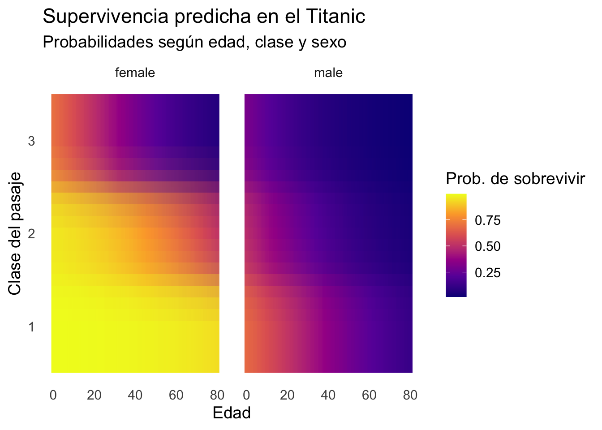

Bonus: Responder la pregunta bonus NO es un requisito necesario para obtener puntaje completo. Responder incorrectamente la pregunta bonus no afectará negativamente la nota obtenida, pero responderla correctamente mejorará la nota obtenida en un máximo de 0.5 puntos (o en la cantidad necesaria para obtener nota máxima si la nota original fuera superior a 6.5)
Introducción
El hundimiento del Titanic en abril de 1912, durante su viaje inaugural de Southampton a Nueva York, ha sido uno de los desastres marítimos más recordados de la historia. La tragedia provocó la muerte de más de 1.500 personas y dio lugar a numerosas investigaciones sobre seguridad marítima y desigualdades sociales en el acceso a los botes salvavidas.
Titanic (1997)
Datos
Para este ejercicio utilizaremos el paquete titanic de R, que contiene distintos conjuntos de datos derivados de los registros de pasajeros del Titanic. Entre ellos, el más comúnmente usado es titanic_train, que proviene del famoso desafío de Kaggle y resume información clave de cada pasajero, incluyendo:
PassengerId: Identificador único del pasajero.
Pclass: Clase económica (1ª, 2ª o 3ª).
Name: Nombre completo.
Sex: Sexo.
Age: Edad en años.
SibSp: Número de hermanos/as o cónyuge a bordo.
Parch: Número de padres o hijos a bordo.
Ticket: Número de boleto.
Fare: Tarifa pagada por el pasaje.
Cabin: Cabina asignada (si corresponde).
Embarked: Puerto de embarque (C = Cherbourg, Q = Queenstown, S = Southampton).
Survived: Variable binaria que indica si el pasajero sobrevivió (1) o no (0).
Visualización rápida de las primeras filas del conjunto de datos:
Cumings, Mrs. John Bradley (Florence Briggs Thayer)
female
38
1
0
PC 17599
71.2833
C85
C
3
1
3
Heikkinen, Miss. Laina
female
26
0
0
STON/O2. 3101282
7.9250
S
4
1
1
Futrelle, Mrs. Jacques Heath (Lily May Peel)
female
35
1
0
113803
53.1000
C123
S
5
0
3
Allen, Mr. William Henry
male
35
0
0
373450
8.0500
S
6
0
3
Moran, Mr. James
male
NA
0
0
330877
8.4583
Q
Ejercicios
I. LPM
Calcula las probabilidades de que un hombre haya sobrevivido en el Titanic \((p_h)\) y de que una mujer haya sobrevivido \((p_m)\). Calcula la diferencia entre ambas proporciones.
library(dplyr)p <- titanic_train %>%group_by(Sex) %>%summarise(p =mean(Survived, na.rm =TRUE)) %>%pull()p_m <- p[which(levels(titanic_train$Sex) =="female")]p_h <- p[which(levels(titanic_train$Sex) =="male")]cat("La probabilidad de sobrevivir para un hombre es:", round(p_h, 2), "\n")
La probabilidad de sobrevivir para un hombre es:
cat("La probabilidad de sobrevivir para una mujer es:", round(p_m, 2), "\n")
La probabilidad de sobrevivir para una mujer es:
diff_p <-round(p_m - p_h, 2)cat("Diferencia en probabilidad de sobrevivir (mujeres – hombres):", diff_p)
Diferencia en probabilidad de sobrevivir (mujeres – hombres):
Usa un LPM para estimar la probabilidad de sobrevivir en función del sexo. Escribe la ecuación de regresión correspondiente y presenta un summary() de los resultados. Explica el significado estadístico de cada coeficiente y su conexión con los resultados de la pregunta anterior.
lpm_1 <-lm(Survived ~factor(Sex), data = titanic_train)summary(lpm_1)
Call:
lm(formula = Survived ~ factor(Sex), data = titanic_train)
Residuals:
Min 1Q Median 3Q Max
-0.7420 -0.1889 -0.1889 0.2580 0.8111
Coefficients:
Estimate Std. Error t value Pr(>|t|)
(Intercept) 0.74204 0.02307 32.17 <0.0000000000000002 ***
factor(Sex)male -0.55313 0.02866 -19.30 <0.0000000000000002 ***
---
Signif. codes: 0 '***' 0.001 '**' 0.01 '*' 0.05 '.' 0.1 ' ' 1
Residual standard error: 0.4087 on 889 degrees of freedom
Multiple R-squared: 0.2952, Adjusted R-squared: 0.2944
F-statistic: 372.4 on 1 and 889 DF, p-value: < 0.00000000000000022
Interpretación:
\(\beta_0\) (intercepto): probabilidad de sobrevivir para las mujeres (grupo de referencia).
\(\beta_1\): cambio en la probabilidad de sobrevivir cuando el pasajero es hombre, en comparación con las mujeres.
\(\beta_0 + \beta_1\): probabilidad de sobrevivir para los hombres.
De acuerdo con estos datos:
Las mujeres tienen una probabilidad de sobrevivir cercana al 74%,
Los hombres alrededor del 19%,
Lo que implica una diferencia de más de 55 puntos porcentuales.
Esto refleja claramente la regla social de “women and children first” aplicada durante la evacuación del Titanic.
Usa un LPM para estimar la probabilidad de sobrevivir en función del sexo, controlando por la edad de los pasajeros. Escribe la ecuación de regresión correspondiente y presenta un summary() de los resultados. Explica el significado estadístico de cada coeficiente y provee una breve interpretación sustantiva.
lpm_2 <-lm(Survived ~factor(Sex) + Age, data = titanic_train)summary(lpm_2)
Call:
lm(formula = Survived ~ factor(Sex) + Age, data = titanic_train)
Residuals:
Min 1Q Median 3Q Max
-0.7786 -0.2115 -0.1931 0.2471 0.8401
Coefficients:
Estimate Std. Error t value Pr(>|t|)
(Intercept) 0.7804879 0.0394345 19.792 <0.0000000000000002 ***
factor(Sex)male -0.5469036 0.0323428 -16.910 <0.0000000000000002 ***
Age -0.0009206 0.0010730 -0.858 0.391
---
Signif. codes: 0 '***' 0.001 '**' 0.01 '*' 0.05 '.' 0.1 ' ' 1
Residual standard error: 0.4144 on 711 degrees of freedom
(177 observations deleted due to missingness)
Multiple R-squared: 0.2911, Adjusted R-squared: 0.2891
F-statistic: 146 on 2 and 711 DF, p-value: < 0.00000000000000022
Interpretación de los coeficientes:
\(\beta_0\) es el intercepto: probabilidad de sobrevivir para una mujer de edad cero (hipotético, solo sirve como punto de referencia).
\(\beta_1\) mide la diferencia en la probabilidad de sobrevivir entre hombres y mujeres de la misma edad. Un valor negativo indica que los hombres tenían menos probabilidad de sobrevivir que las mujeres, controlando por edad.
\(\beta_2\) mide el efecto de la edad sobre la probabilidad de sobrevivir: cuánto cambia la probabilidad de sobrevivir por cada año adicional de edad, manteniendo constante el sexo.
En general, los resultados muestran que los hombres tenían una probabilidad mucho menor de sobrevivir que las mujeres, y que la probabilidad de sobrevivir también decrecía con la edad.
De acuerdo al modelo estimado en la pregunta anterior, ¿cuál es el efecto marginal de la edad sobre la probabilidad esperada de sobrevivir?
El efecto marginal de la edad sobre la probabilidad de sobrevivir está dado por:
En base al modelo usado en II.3., calcula las probabilidades esperadas de sobrevivir para un hombre y una mujer de 30 años. Expresa formalmente las ecuaciones correspondientes a estas predicciones.
# A tibble: 2 × 3
Sex Age pred_prob
<chr> <dbl> <dbl>
1 female 30 0.753
2 male 30 0.206
Agrega una interacción entre Sex y Age al modelo estimado en II.3. Escribe la ecuación de regresión y presenta un summary() de los resultados. Interpreta el efecto de la edad estimado en términos estadísticos y sustantivos.
El efecto marginal de la edad es \(\beta_{2} + \beta_{3}\).
Esto permite comparar no solo las diferencias de género, sino también cómo la edad afecta diferencialmente la probabilidad de sobrevivir entre hombres y mujeres.
II. Regresión Logística
Calcula las odds de que un hombre haya sobrevivido en el Titanic \((\text{odd}_h)\) y de que una mujer haya sobrevivido \((\text{odd}_m)\). Calcula el odds ratio entre ambas odds (hombres vs mujeres) e interpreta el resultado.
Implementación en R:
tabla <- titanic_train %>%with(table(Sex, Survived))odd_m <- tabla["female","1"]/tabla["female","0"]odd_h <- tabla["male","1"]/tabla["male","0"]cat("Las odds de sobrevivir para un hombre son:", round(odd_h, 2), "\n")
Las odds de sobrevivir para un hombre son: 0.23
cat("Las odds de sobrevivir para una mujer son:", round(odd_m, 2), "\n")
Las odds de sobrevivir para una mujer son: 2.88
theta <-round(odd_h/odd_m, 2)cat("El odds ratio (hombres/mujeres) es:", theta)
El odds ratio (hombres/mujeres) es: 0.08
El odds ratio obtenido es muy inferior a 1 (cercano a 0.09). Esto significa que, en el Titanic, los hombres tenían aproximadamente un 90% menos chances relativas de sobrevivir que las mujeres.
Usa una regresión logística para estimar la log-odds de sobrevivir en función del sexo. Escribe la ecuación de regresión correspondiente y presenta un summary() de los resultados. Explica el significado estadístico de cada coeficiente y su conexión con los resultados de la pregunta anterior.
Call:
glm(formula = Survived ~ factor(Sex), family = binomial(link = "logit"),
data = titanic_train)
Coefficients:
Estimate Std. Error z value Pr(>|z|)
(Intercept) 1.0566 0.1290 8.191 0.000000000000000258 ***
factor(Sex)male -2.5137 0.1672 -15.036 < 0.0000000000000002 ***
---
Signif. codes: 0 '***' 0.001 '**' 0.01 '*' 0.05 '.' 0.1 ' ' 1
(Dispersion parameter for binomial family taken to be 1)
Null deviance: 1186.7 on 890 degrees of freedom
Residual deviance: 917.8 on 889 degrees of freedom
AIC: 921.8
Number of Fisher Scoring iterations: 4
Interpretación:
\(\beta_0\) es el intercepto y representa las log-odds de sobrevivir para las mujeres (grupo de referencia).
\(\beta_1\) es el coeficiente para el sexo masculino. Su valor negativo indica que los hombres tienen menores log-odds de sobrevivir que las mujeres.
En términos de odds:
Mujeres: \(\text{odd}_m = e^{\beta_0}\)
Hombres: \(\text{odd}_h = e^{\beta_0 + \beta_1}\)
Por tanto, \(\theta = e^{\beta_1}\) es el odds ratio.
Estima una regresión logística para las log-odds de sobrevivir en función del sexo, controlando por la edad de los pasajeros. Escribe la ecuación de regresión correspondiente y presenta un summary() de los resultados. Explica cada coeficiente.
Call:
glm(formula = Survived ~ factor(Sex) + Age, family = binomial(link = "logit"),
data = titanic_train)
Coefficients:
Estimate Std. Error z value Pr(>|z|)
(Intercept) 1.277273 0.230169 5.549 0.0000000287 ***
factor(Sex)male -2.465920 0.185384 -13.302 < 0.0000000000000002 ***
Age -0.005426 0.006310 -0.860 0.39
---
Signif. codes: 0 '***' 0.001 '**' 0.01 '*' 0.05 '.' 0.1 ' ' 1
(Dispersion parameter for binomial family taken to be 1)
Null deviance: 964.52 on 713 degrees of freedom
Residual deviance: 749.96 on 711 degrees of freedom
(177 observations deleted due to missingness)
AIC: 755.96
Number of Fisher Scoring iterations: 4
\(\beta_0\): intercepto, representa las log-odds de sobrevivir para una mujer de edad cero (referencia teórica).
\(\beta_1\): efecto del sexo masculino, controlando por edad. Un coeficiente negativo confirma que los hombres tenían menores chances de sobrevivir.
\(\beta_2\): efecto de la edad sobre las log-odds de sobrevivir. Un valor negativo indica que los pasajeros de mayor edad tenían menores probabilidades de sobrevivir, manteniendo constante el sexo.
¿Cuál es la fórmula para el efecto marginal de la edad sobre la probabilidad esperada de sobrevivir?
# A tibble: 2 × 3
Sex Age pred_prob
<chr> <dbl> <dbl>
1 female 30 0.753
2 male 30 0.206
De acuerdo al modelo estimado en II.3., ¿cuál es el efecto marginal de la edad sobre la probabilidad de sobrevivir para un hombre y una mujer de 30 años?
dydx_m30 <- logit_2$coefficients["Age"]*p_m30_logit*(1-p_m30_logit)dydx_h30 <- logit_2$coefficients["Age"]*p_h30_logit*(1-p_h30_logit)cat("Efecto marginal de la edad para mujeres de 30 años:", dydx_m30, "\n")
Efecto marginal de la edad para mujeres de 30 años: -0.001009261
cat("Efecto marginal de la edad para hombres de 30 años:", dydx_h30, "\n")
Efecto marginal de la edad para hombres de 30 años: -0.0008863252
Estimate Std. Error z Pr(>|z|) S 2.5 % 97.5 % Sex Age
-0.001009 0.00118 -0.855 0.393 1.3 -0.00332 0.00131 female 30
-0.000886 0.00103 -0.858 0.391 1.4 -0.00291 0.00114 male 30
Term: Age
Type: response
Comparison: dY/dX
A diferencia del LPM, en la regresión logística el efecto marginal de la edad depende del nivel de las variables explicativas. Esto implica que los efectos son más pequeños cuando las probabilidades están muy cerca de 0 o de 1, y más grandes en rangos intermedios de probabilidad.
Bonus:
A continuación se muestra un gráfico que representa las probabilidades predichas de sobrevivir en el Titanic en función de la edad, sexo y clase del pasaje (Pclass).
A partir del gráfico, deduzcan cuál puede ser el modelo que generó estas superficies de probabilidad.
Estimen dicho modelo en R.
Reproduzcan un gráfico lo más parecido posible.
Aquí estimamos una regresión logística con interacciones entre edad, sexo y clase:
ggplot(grid, aes(x = Age, y =factor(Pclass), fill = pred)) +geom_raster(interpolate =TRUE) +scale_fill_viridis_c(name ="Prob. de sobrevivir", option ="C") +facet_wrap(~Sex) +labs(title ="Supervivencia predicha en el Titanic",subtitle ="Probabilidades según edad, clase y sexo",x ="Edad",y ="Clase del pasaje" ) +theme_minimal(base_size =14) +theme(panel.grid =element_blank())

El gráfico presenta la probabilidad predicha de sobrevivir en el Titanic en función de la edad, la clase del pasaje y el sexo.
Efecto de la edad: en ambos sexos, la probabilidad de sobrevivir tiende a disminuir con la edad. El descenso es más pronunciado en tercera clase, lo que sugiere que la vulnerabilidad asociada a la edad se amplifica en condiciones de menor estatus social.
Efecto de la clase: las probabilidades de sobrevivir son mucho mayores en primera clase, intermedias en segunda y bastante más bajas en tercera. Esto refleja tanto desigualdades estructurales (ubicación de cabinas, acceso a botes salvavidas) como normas sociales que priorizaron ciertos grupos.
Efecto del sexo: las mujeres presentan una ventaja clara y consistente en todas las clases y edades. La diferencia entre mujeres y hombres es especialmente marcada en primera y segunda clase, donde la mayoría de las mujeres, sin importar la edad, tenían alta probabilidad de sobrevivir, mientras que en los hombres las probabilidades eran mucho más bajas y decrecían con la edad.
En conjunto, el gráfico refleja una interacción entre clase, edad y sexo:
La supervivencia está determinada tanto por factores biológicos/sociales (edad, sexo) como por factores estructurales (estatus socioeconómico representado por la clase del pasaje).